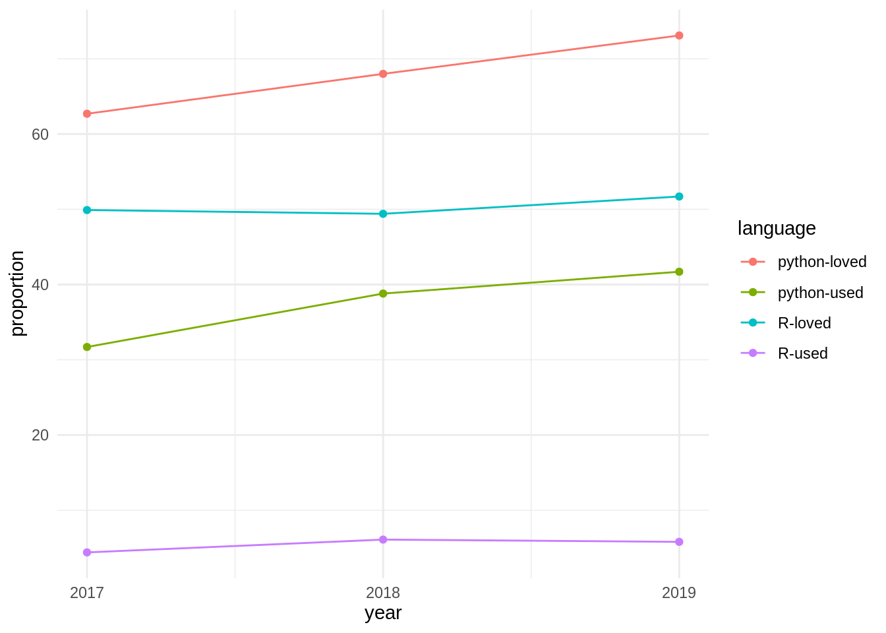

A Appendices
A.1 Notes on Scope and the Python Statistical Ecosystem
Two factors may be usefully noted in this regard:
- The potential number of python packages for statistical analyses is likely to be relatively more restricted than relative numbers of R packages. Taking as indicative presentations at the previous three Joint Statistical Meetings (JSMs; 2018-2020), no python packages were referred to in any abstract, while 32 R packages were presented, along with two meta-platforms for R packages. Presentations at the Symposium of Data Science and Statistics (SDSS) for 2018-19 similarly including numerous presentations of R packages, along with presentation of three python packages. It may accordingly be expected that potential expansion to include python packages will demand relatively very little time or effort compared with that devoted to R packages as the primary software scope.
- In spite of the above, the community of python users is enormously greater, reflected in the currently 266,576 packages compared with 16,379 packages on CRAN, or over 16 times as many python packages. Similarly, 41.7% of all respondents to the 2019 stackoverflow developer survey nominated python as their most popular language, compared with only 5.8% who nominated R.
The relative importance of python is powerfully reflected in temporal trends from the stackoverflow developer survey from the previous three years, with results shown in the following graphic.

Python is not only more used and more loved than R, but both statistics for python have consistently grown at a faster rate over the past three years as have equivalent statistics for R.
Both languages nevertheless have relative well-defined standards for software packaging, python via the Python Package Index (pypi), and R via CRAN. In contrast to CRAN, which runs its own checks on all packages on a daily basis, there are no automatic checks for pypi packages, and almost any form of package that minimally conforms to the standards may be submitted. This much lower effective barrier to entry likely partially contributes to the far greater numbers of pypi (266,576) than CRAN (16,379) packages.
A.2 Analysis of statistical software keywords
The
JOSS
conducts its own peer review process, and publishes textual descriptions of
accepted software. Each piece of software then has its own web page on the
journal’s site, on which the text is presented as a compiled .pdf-format
document, along with links to the open review, as well as to the software
repository. The published document must be included within the software
repository in a file named paper.md, which enables automatic extraction and
analysis of these text descriptions of software. Rather than attempt
a comprehensive, and unavoidably subjective, categorization of software, these
textual descriptions were used to identify key words or phrases (hereafter,
“keywords”) which encapsulated the purpose, function, or other general
descriptive elements of each piece of software. Each paper generally yielded
multiple keywords. Extracting these from all papers judged to be potentially in
scope allowed for the construction of a network of topics, in which the nodes
were the key words and phrases, and the connections between any pair of nodes
reflected the number of times those two keywords co-occurred across all papers.
We extracted all papers accepted and published by JOSS (217 at the time of writing in early 2020), and manually determined which of these were broadly statistical, reducing the total to 92. We then read through the contents of each of these, and recorded as many keywords as possible for each paper. The resultant network is shown in the following interactive graphic, in which nodes are scaled by numbers of occurrences, and edges by numbers of co-occurrences. (Or click here for full-screen version with link to code.)
Such a network visualization enables immediate identification of more and less central concepts including, in our case, several that we may not otherwise have conceived of as having been potentially in scope. We then used this network to define our set of key “in scope” concepts. This figure also reveals that many of these keywords are somewhat “lower level” than the kinds of concepts we might otherwise have used to define scoping categories. For example, keywords such as “likelihood” or “probability” are not likely to be useful in defining actual categories of statistical software, yet they turned out to lie at the centres of relatively well-defined groups of related keywords.
We also examined the forms of both input and output data for each of the 92 pieces of software described in these JOSS papers, and constructed an additional graph directionally relating these different data formats.
## `summarise()` regrouping output by 'from' (override with `.groups` argument)A.3 Other Software Standards
The following list represents the standards developed by the Software Sustainability Institute:
- Usability
- 1.1 Understandability
- High level description of what/who the software is for
- High level description of what the software does
- High level description of how the software works
- Design rationale - why the software does things the way it does
- Architectural overview with diagrams
- Descriptions of intended use cases
- Case studies of use
- 1.2 Documentation
- Provides a high level overview of the software
- Partitioned into sections for users, user-developers, and developers (depending on the software)
- Lists resources for further information
- Is task-oriented
- Consists of clear, step-by-step instructions
- Gives examples of what the user can see at each step
- For problems and error messages, the symptoms and step-by-step solutions are provided
- Does not use terms like “intuitive”, “user-friendly”, “easy to use”, “simple”, or “obviously” (other than in quotes from satisfied users).
- States command names, syntax, parameters, error messages exactly as they appear or should be typed.
- Uses \({\tt teletype-style fonts}\) for command line inputs and outputs, source code fragments, function names, class names, etc.
- English language descriptions of commands or errors are provided.
- Plain text files (e.g. READMEs) use indentation and underlining to structure the text.
- Plain text files do not use
TABcharacters to indent the text. - Documentation is complete (includes configuration requirements or properties).
- Is held under version control alongside the code
- Is on the project web site
- Documentation on web site makes it clear what version of software the documentation applies to.
- 1.3 Buildability
- Straightforward to meet build pre-requisites
- Straightforward to build the software
- Web site has build instructions
- Source distributions have build instructions
- Web site lists all third-party dependencies that are not bundled
- Source distribution lists all third-party dependencies that are not bundled
- All mandatory third-party dependencies are currently available
- All optional third-party dependencies are currently available
- 1.4 Installability
- Web site has installation instructions
- Binary distributions have installation instructions
- Web site lists all third-party dependencies that are not bundled
- 1.5 Learnability
- A getting started guide is provided with a basic example
- Instructions are provided for many basic use cases
- Reference guides are provided for all options
- Documentation is provided for user-developers and developers
- 1.5 Performance
- Sustainability & Maintainability
- 2.1 Identity
- Identity of project is clear and unique both within domain of application and generally.
- Project/software has own domain name
- Project/software has distinct name within application area (appears within first page of search results when entered with domain keywords).
- Project/software has distinct name regardless of application area
- Project/software does not throw up embarrassing “Did you mean …” suggestions on search engines.
- Project/software name does not violate a trademark
- Project/software name is trademarked
- 2.2 Copyright
- Web site states copyright
- Web sites states developers and funders
- If multiple web sites, then all state exactly same copyright, license, authorship
- Each source code file has copyright statement
- If supported by language, each source file has copyright statement embedded within a constant -
- Each source code file has a license header
- 2.3 Licencing
- Appropriate licence
- Web site states licence
- Software has a licence
- Software has an open source licence
- Software has an Open Software Institute recognised licence
- 2.4 Governance
- Management is transparent
- Project has a defined governance policy
- Governance policy is publicly available
- 2.5 Community
- To what extent does an active user community exist?
- Web site has statement of numbers of users/developers/members
- Web site has quotes from satisfied users
- Web site lists most important partners or collaborators
- Web site has list of project publications
- Web site lists third-party publications that use the software
- Web site lists software that uses/bundles this software
- Users are required to cite software if publishing results derived from its use
- Users exists who are not members of the project
- Developers exists who are not members of the project
- 2.6 Accessibility
- To what extent is software accessible?
- Binary distributions are available
- Binary distributions are available without need for registration or authorisation
- Source distributions are available
- Source distributions are available without need for registration or authorisation
- Access to source code repository is available (whether for free, payment, registration)
- Anonymous read-only access to source code repository
- Ability to browse source code repository online
- Repository hosted in sustainable third-party site which will live beyond lifetime of any current funding
- Downloads page shows evidence of regular releases
- 2.7 Testability
- Straightforward to test software to verify modifications
- Project has unit tests
- Project has integration tests
- Project has scripts for testing non-automated scenarios (e.g. GUIs)
- Project recommends tools to check conformance to coding standards
- Project has automated tests to check conformance to coding standards
- Project recommends tools to check test coverage
- Project has automated tests to check test coverage
- A minimum test coverage level has been defined
- There is an automated test for this minimum level
- Tests are automatically run nightly
- Continuous integration is supported
- Test results are visible to all developers/members
- Test results are visible publicly
- Project specifies how to set up external resources (FTP servers, databases, etc.) for tests
- Tests create their own files, database tables, etc.
- 2.8 Portability
- To what extent can software be used on other platforms? (Checkboxes for various platforms.)
- 2.9 Supportability
- To what extent will software be supported currently and in the future?
- Web site has page describing how to get support
- User doc has page describing how to get support
- Software describes how to get support (in README)
- Project has an e-mail address
- Project e-mail address has domain name
- E-mails are read by more than one person
- E-mails are archived
- E-mails archives are publicly readable
- E-mail archives are searchable
- Project has a ticketing system
- Ticketing system is publicly available
- Ticketing system is searchable
- Web site has a site map or index
- Web site has a search facility
- Project resources are hosted externally in a sustainable third-part repository which will live beyond lifetime of current project
- E-mail archives or ticketing system shows that queries are resounded to (not necessarily fixed) within a week.
- If there is a blog, it is regularly used
- E-mail lists of forums, if present, have regular posts
- 2.10 Analysability
- Source code is structured into modules or packages
- Source code structure relates clearly to the architecture or design.
- Source code repository is in a version control system
- Structure of source code repository and how this maps to software’s components is documented
- Source releases are snapshots of the repository
- Source code is commented
- Source code comments are written in a document generation mark-up language
- Source code is laid out and indented well
- Source code uses sensible class, package, and variable names
- There are no old or obsolete source code files that should be handled by version control
- There is no commented out code
- There are not TODOs in the code
- Auto-generated source code is in separate directories from other source code
- Regeneration of auto-generated source code is documented
- Coding standards are recommended by the project
- Coding standards are required to be observed
- Project-specific coding standards are consistent with community standards
- 2.11 Changeability
- Project has a defined contributions policy
- Contributions policy is publicly available
- Contributors retain copyright/IP of their contributions
- Users, developer members, and developers who are not members can contribute
- Project has a defined and stable deprecation policy
- Stability/deprecation policy is publicly available
- Releases document deprecated components within release
- Releases document removed or changed components within release
- 2.12 Evolvability
- Web site describes project roadmap, plans, or milestones
- Web site describes how project is funded or sustained
- Web site describes end date of current funding lines
- 2.13 Interoperability
- Uses open standards
- Uses mature, ratified, non-draft standards
- Provides tests demonstrating compliance with standards
In contrast to these qualitative aspects, Mili (2015) identifies the following attributes of Software Quality:
- Functional Attributes
- 1.1 Correctness
- 1.2 Robustness
- Useability Attributes
- 2.1 Ease of Use
- 2.2 Ease of Learning
- 2.3 Customizability
- 2.4 Calibrability
- 2.5 Interoperability
- Structural Attributes
- 3.1 Design Integrity
- 3.2 Modularity (including “cohesion” and “coupling”)
- 3.3 Testability
- 3.4 Adaptability
Other aspects derived from other forms of standards include:
- Must use https
- Must be in English
- Unique version numbering
- Semantic versioning
- Release notes
- Static code analysis (with links to lots of language-specific tools)
- Dynamic code analysis (with links to lots of language-specific tools)
- Use of memory check tools, or memory-safe languages
- Functions that are type stable unless explicitly indicated and explained otherwise. (See also the section on type stability in the tidyverse design guide.)
A.4 Bibliography
Ammann, Paul, and Jeff Offutt. 2017. Introduction to Software Testing. Cambridge University Press.
Estivill-Castro, Vladimir. 2002. “Why so Many Clustering Algorithms: A Position Paper.” ACM SIGKDD Explorations Newsletter 4 (1): 65–75. https://doi.org/10.1145/568574.568575.
Lenhardt, W., Stanley Ahalt, Brian Blanton, Laura Christopherson, and Ray Idaszak. 2014. “Data Management Lifecycle and Software Lifecycle Management in the Context of Conducting Science.” Journal of Open Research Software 2 (1): e15. https://doi.org/10.5334/jors.ax.
Mili, Ali. 2015. Software Testing: Concepts and Operations. Wiley.
Stokes, David. 2012. “21 - Validation and Regulatory Compliance of Free/Open Source Software.” In Open Source Software in Life Science Research, edited by Lee Harland and Mark Forster, 481–504. Woodhead Publishing Series in Biomedicine. Woodhead Publishing. https://doi.org/10.1533/9781908818249.481.
References
Mili, Ali. 2015. Software Testing: Concepts and Operations. Wiley.